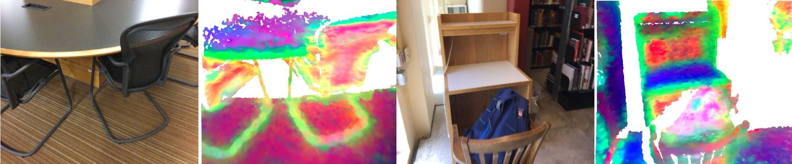
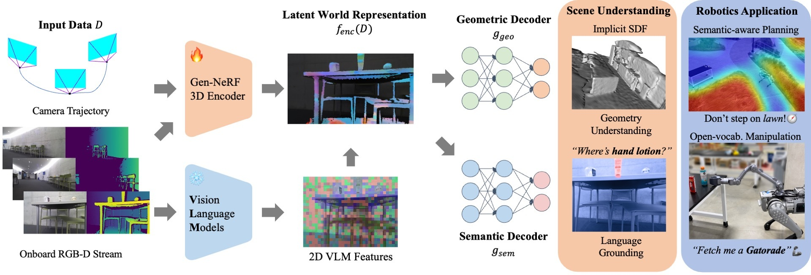

TLDR: Real-time Generalizable Feature Fields enable Mobile Manipulation
Abstract
An open problem in mobile manipulation is how to
represent objects and scenes in a unified manner so that robots
can use it both for navigating in the environment and manipulating
objects. The latter requires capturing intricate geometry
while understanding fine-grained semantics, whereas the former
involves capturing the complexity inherited to an expansive
physical scale. In this work, we present GeFF (Generalizable
Feature Fields), a scene-level generalizable neural feature field
that acts as a unified representation for both navigation and
manipulation that performs in real-time. To do so, we treat
generative novel view synthesis as a pre-training task, and then
align the resulting rich scene priors with natural language via
CLIP feature distillation. We demonstrate the effectiveness of this
approach by deploying GeFF on a quadruped robot equipped
with a manipulator. We evaluate GeFF’s ability to generalize to
open-set objects as well as running time when performing
open-vocabulary mobile manipulation in dynamic scenes.
Piloting Study: Generalizable NeRFs as a Pre-training Proxy

Even without explicit semantic supervision, generalizable NeRFs implicitly acquire geometric and semantic priors (grouping similar structures),
which we further enhance in GeFF. Feature visualizations are done by PCA on rendered features on ScanNet.
Method Overview

Pre-trained as a generalizable NeRF encoder, GeFF provides unified scene representations
from onboard RGB-D stream, offering both real-time geometry and
language-grounded semantics. Compared to LERF, GeFF runs
in real-time without costly per-scene optimization.
Open-vocabulary Mobile Manipulation
Building upon 2D vision foundation models, GeFF generalizes to diverse real-world indoor and outdoor scenes and objects.
*Features fields visualization reflects real FPS on the mobile robot.
Collecting an empty blue bottle coffee cup and toss it in a recycling bin.
Picking up a bottle in the woods.
Cleaning food warps from an outdoor patio.
Placing used packaging to trash bin in an office.
Picking up a bottle of car glass cleaner from the trunk.
Recycling a plastic bottle in a university lounge.
Case study: capabilities of GeFF
We study what GeFF representations can do on various applications, including classical problems such as
dynamic obstacle avoidance and narrow passage traversal, as well as more challenging tasks such as
open-vocabulary semantic-aware planning on our quadruped robot.
Dynamic Obstacle Avoidance
The robot avoids a person who walks into the path with feature fields updated in real time.
Narrow Passage Traversal
The robot goes through a narrow doorway with geometric representations from GeFF.
Geometry-only Path Planning
The robot takes the shortest path and step over the lawn to the target object.
Semantic-aware Path Planning
GeFF assigns higher affordances for lawn and keeps the robot on the walkway.
BibTeX
@article{anonymized,
author = {anonymized},
title = {Learning Generalizable Feature Fields for Mobile Manipulation},
booktitle = {},
year = {2024},
}